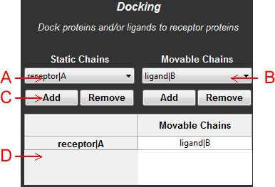
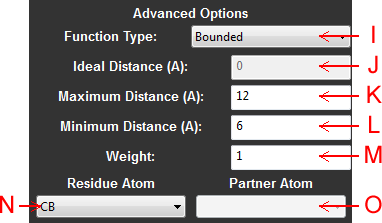
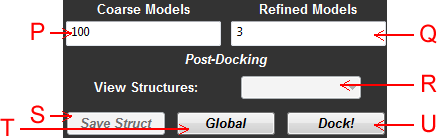

Abstract: The purpose of the docking panel is to simplify setting up a Rosetta docking simulation. You can easily specify which loaded PyMOL chains will be in a fixed, static, receptor group and which chains will be docked to this fixed structure. Additionally, simplified tools were created to assist in setting up a constraints file to tell the docker which residues should be in contact. The two constraints available are AtomPair constraints and Site constraints. AtomPair constraints define ideal distances between two atoms and Site constraints define ideal distances between an atom and another chain (it does not matter what part of the chain is in contact with the atom). By default, the functions defined by these constraints correspond to bounded functions that have no penalty when the two constrained entities are within 6-12A of each other. This is an attempt to make it easy to define contacts between residues. Use constraint default settings unless you have a specific purpose in mind that requires defining contacts between other atoms and/or using different functions with different distances.
You can find more information about constraints here: Rosetta Constraints Files

Figure 1: Schematic of the docking panel, viewing the docked protein definition controls
A: Static Chains - Select which currently loaded chains will be part of the receptor structure.
B: Moving Chains - Select which currently loaded chains will be part of the ligand structure.
C: Docking Chain Controls - Use these controls to add or remove chains specified in the static and moving chain menus.
D: Docking Setup - This grid displays which chains will belong to the receptor and ligand structures.
Figure 2: Schematic of the docking panel, viewing the constraints controls
E: Constraints Controls - Use these controls to add and remove the selected residues to the constraints file, or clear the entire constraints file.
F: Constraint Type - Click these buttons to select whether the added residues will be either an AtomPair or Site constraint. Please note that for AtomPairs, only receptor residues may be added. The ligand atoms are always defined as the "partners." This was designed to prevent constraint redundancies. For site constraints, you may add residues from both the receptor and ligand.
G: Partner Menu - Displays the list of available partners for the selected constraint. Select constraints by clicking on them in the constraints grid. For AtomPair constraints, the residues of the ligand will be available. For Site constraints, the chains of the opposite structure will be available.
H: Constraints Grid - A grid containing all of the currently active constraints, displaying the constraint type, the residue participating in the constraint along with its atom, the partner participating in the constraint (either another residue atom or a whole chain), the function that defines how to score the constraint, and a list of arguments for this function.
NOTE: Filling up the partner list can be tedious. To simplify this process, simply select all residues that you wish add sequentially to the partner list in the Sequence Viewer. Then right click on a row in the "Partner" column to add all valid elements in this selection to the clicked row and all rows underneath it.

Figure 3: Schematic of the docking panel, viewing the advanced constraints controls
NOTE: Unless you have a specific purpose in mind, it is recommended that you use the default functions and arguments for your constraints.
I: Function Type - Select the function for evaluating the current selected constraint in the constraints grid. The available functions are Harmonic, Gaussian, Bounded, and Sigmoid.
J: Ideal Distance - For Harmonic and Gaussian functions, the ideal distance is simply the desired distance between the residue atom and its partner, in Angstroms. At this distance, the constraint has no penalty, otherwise the penalty is positive. For Sigmoid functions, this is the point of inflection along the S-curve, so distances lower than the ideal distance setting actually receive less of a penalty.
K: Maximum Distance - For Bounded constraints, this is the maximum tolerated distance between the residue atom and its partner. Above this value, a parabolic penalty begins to apply.
L: Minimum Distance - For Bounded constraints, this is the minimum tolerated distance between the residue atom and its partner. Below this value, a parabolic penalty begins to apply.
M: Weight - A constant factor applied to the constraint. Setting a higher weight means that Rosetta will try harder to satisfy this constraint than other constraints with lower weights. For Harmonic, Bounded, and Gaussian functions, the weight is converted to the standard deviation value (sd) by calculating sd as the inverse square root of the weight (because the sd is in the denominator of the function). For sigmoid functions, the weight simply corresponds to the slope of the S-curve. You can actually specify negative weight values for sigmoid function to invert the S, so a higher penalty is applied for being less than the ideal value and a bonus is given for being farther away from the ideal value.
N: Residue Atom Menu - Use this menu if you want to change which atom in the residue will be constrained. By changing residue atoms, you can add multiple constraints to the same residue.
O: Partner Atom Menu - Use this menu to change what the partner atom will be in AtomPair constraints.

Figure 4: Schematic of the docking panel, viewing the docking finalization controls
P: Number of Coarse Decoys - Specify the number of coarse decoys to run. Docking begins with simplifying the docking setup such that all sidechains are replaced with single atom "centroids" to quickly generate a coarse model of the docked structure. Rosetta will run the specified number of coarse models and then take the best scoring structures and generate full-atom refined models. Typically Rosetta suggests running 100,000 to 1,000,000 coarse decoys, which is extremely time-consuming. Instead, in InteractiveROSETTA one may find it helpful to run 100 coarse decoys, which runs in about 10 minutes, to get a good model, and tweak the output by manually rotating the structures and defining more specific constraints, and run the simulation again a couple of times until a rationally-informed model that is acceptable is generated. This seems to be better than running 1,000,000 coarse models with little researcher input.
Q: Number of Refined Models - Specify the number of refined models to run. After all the coarse simulations are completed, Rosetta will take the best coarse decoys (the number is defined by the number of refined models) and submit each one to a refined docking simulation to generate the actual full-atom structure. A small number is recommended here because a single refined docking simulation is more computationally expensive than a coarse simulation.
R: View Structures Menu - A handy menu for viewing the refined models returned after a docking simulation.
S: Save Structure - Use this button to save the currently viewed docking model to a PDB file. This is useful if you want to save more than one of your refined models.
T: Orientation Button - This is a toggle-able button with four options. "Global" indicates that the orientation of the binding partners is unknown, so the coarse simulations will start by randomizing the orientations of both the receptor and ligand. "Fix Stat" indicates that the static chains (receptor) will not be randomized, but the moving (ligand) chains will be. "Fix Mov" indicates that the moving chains (ligand) will not be randomized, but the static chains (receptor) will be. "Fix Both" means that neither the receptor nor the ligand will have their orientations randomized. If you have a general understanding of where the ligand should bind, it is highly recommended that you use the rotational/translation tools of the selection panel to get the two orientations close to being correct and then use the "Fix Both" option here. "Global" docking should only be used if you really do not know where the binding site is or the binding site is highly uncertain.
U: Docking/Finalize Button - Click this button to start a docking simulation with the indicated parameters. After the docking session, this becomes the Finalize button, where you can accept or reject the docking simulation. Only the model selected in the View Structures Menu will be loaded into the sequence window.